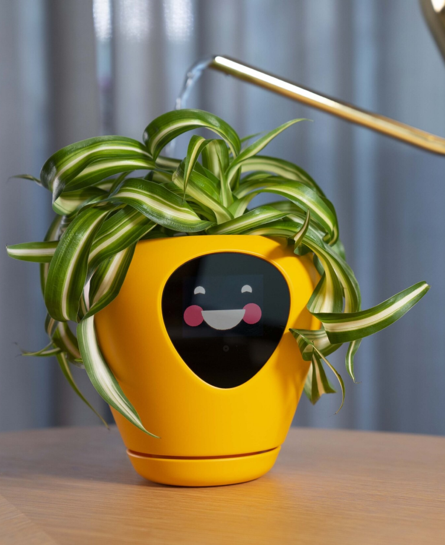

Problem Statement

Energy Consumption Challenges
1
Unseen Energy Leaks
Many households and offices are plagued by energy leaks,
where devices continue to draw power even when seemingly
turned off. These unseen leaks contribute to unnecessary
energy expenses.
2
Lack of Awareness
A common challenge lies in the lack of awareness regarding
individual appliance energy consumption. Users often find
themselves in the dark, not knowing which devices are the
energy guzzlers contributing to escalating electricity
bills.
3
Inefficient Device Usage
Appliances running at full tilt, even when not in use, add
to the inefficiency. Think of the idle air conditioner
cooling an empty room or the standby mode of electronics
quietly sipping power.
Need for Efficient Energy Management
Cost Savings
By identifying and rectifying energy leaks and
inefficient device usage, households and offices can
significantly cut down on electricity bills, leading to
substantial cost savings.
1
Environmental Impacs
The environmental toll of excessive energy consumption
cannot be ignored. A more conscious approach to energy
management directly contributes to reducing our carbon
footprint, fostering a healthier planet.
2
Resource Conservation
As energy resources become scarcer, responsible
consumption becomes not just a choice but a necessity.
Efficient energy management ensures we make the most of
the resources available.
3
User Convenience
Users deserve the convenience of managing their energy
consumption effortlessly. The ability to control devices
remotely and receive timely alerts ensures that energy
management fits seamlessly into modern lifestyles.
4

Market Analysis
Before we designed our device and app, we researched and compared
the project with similar products on the market. This helped us to
identify the strengths and weaknesses of competitors, and to find
out the gaps and opportunities for improvement.
Some of the existing products that offer similar functionality
are
Smart plugs
These are devices that plug into your appliances and
monitor their energy consumption, and let you control
them remotely using an app. Some examples of smart plugs
are EcoPlug, SmartSwitch, EnerGy, and PowerSaver.
Smart meters
These are devices that measure the energy consumption of
your entire home or building, and provide you with
real-time feedback and data on your energy usage. Some
examples of smart meters are Sense, Neurio, Smappee, and
Efergy.
Energy monitors
These are devices that measure the energy consumption of
individual appliances or circuits, and provide you with
detailed information and analysis on your energy usage.
Some examples of energy monitors are Emporia, Eyedro,
Wemo, and Curb.
We compared these products based on various criteria, such
as features, prices, usability, compatibility, customer
reviews, etc. We also used some online tools or websites to
compare different products, such as Smart Plug Comparison
Tool, Smart Meter Comparison Tool, and Energy Monitor
Comparison Tool.
Disadvantages of these deviceS
Installation Complexity
Some users may find the installation process of home
energy monitors to be complex or challenging. Depending on
the specific device, it may require electrical wiring
knowledge or professional assistance for proper
installation.
COST
Home energy monitors can vary in price, and some models may
be relatively expensive. While they can potentially help you
save on energy bills in the long run, the upfront cost may
be a consideration for some users.
They require users to learn how to interpret and analyze the
accumulated consumer information
Reference and Inspiration


Oppen source
Our Solution
In response to these challenges and recognizing the pressing need
for efficient energy management, our project, the Smart Energy
Consumption and Control System, emerges as a beacon of solution—a
user-friendly, cost-effective, and environmentally conscious
approach to transforming the way we use energy in our daily lives.


Enter the Smart Energy Monitoring and Control System, your
personalized energy guardian. This innovative solution tackles
the identified challenges of energy inefficiency head-on,
offering a seamless blend of technology and user-centric design.
Real-time Monitoring
User-Friendly Interface
Smart Alerts
Energy Efficiency Analytics

Project Description
Introducing an innovative solution that aims to simplify
energy monitoring and promote energy-saving behaviors in
households. Our product is a user-friendly device that
focuses on monitoring the energy consumption of household
appliances and employs the principles of emotional design to
effectively alert users when excessive energy usage is
detected, encouraging them to modify their consumption
habits through the metaphor of the life of a virtual plant
or pet.
Concept
By simplifying the user interface to resemble the life of
pet, our product cleverly aims to communicates the impact of
excessive energy consumption in a relatable and visually
appealing manner. As users consume more energy, the pet on
the interface gradually withers, serving as a gentle
reminder to reduce electricity usage. This emotional
connection, rooted in the metaphor of a living friend,
evokes a sense of responsibility and empowers users to
proactively manage their energy consumption. The
user-friendly interface fosters a positive and engaging user
experience, making energy monitoring accessible to users of
all backgrounds.
How IT will work
At its core, this product utilizes advanced sensing arduino
technology to measure and analyze the energy usage of
individual devices of the home. The collected data is then
processed and presented to the user through an intuitive and
visually appealing interface, ensuring ease of understanding
for users of all technical backgrounds without having to
investing time in analyzing the data provided.
What is new
- The device incorporates elements of emotional design to enhance user engagement and drive behavior change.
- Visually and emotionally impactful alerts are used to grab the user's attention when excessive energy consumption is detected. Alerts may include vibrant color changes, animated graphics, or gentle vibrations to evoke a sense of urgency and encourage immediate action.
- Intuitive and easy to understand for users of all backgrounds without having to investing time in analyzing energy usage data and making informed decisions based on that data.
- Easy installation and integration into existing home setups to ensure a seamless user experience.
Target Audience
- Tech-Savvy Environmental Enthusiasts: This segment of the target audience comprises individuals who are passionate about sustainability and actively seek ways to reduce their carbon footprint. They are likely to have a good understanding of energy consumption and are willing to invest time and effort into monitoring and adjusting their energy usage. The emotional design elements of the product can resonate with their values and further motivate them to take action.
- Novice Energy Savers: This segment includes individuals who are new to energy monitoring and seek a simple and intuitive solution to help them understand and reduce their energy consumption. They may not have extensive technical knowledge and may be overwhelmed by complex data analysis. The user-friendly interface and emotional design of the product can make it easier for them to engage with energy monitoring and take steps to conserve energy.
- Busy Professionals: This segment consists of individuals with busy lifestyles who may not have the time or inclination to extensively analyze energy usage data. They value simplicity and convenience. The product's easy installation, clear recommendations, and visually impactful alerts can quickly draw their attention to excessive energy consumption, prompting them to take immediate action without requiring extensive analysis.
- Families and Homeowners: This segment includes households with multiple occupants, where energy consumption can be varied and challenging to monitor. The product's ability to track individual devices and provide personalized insights can help families and homeowners identify energy-intensive appliances or devices and encourage energy-saving habits among all members of the household.
- Design and Tech Enthusiasts: This segment consists of individuals who appreciate aesthetically pleasing and innovative products. The emotional design elements of the product, such as visually appealing alerts and intuitive user interfaces, can appeal to their sense of style and love for technology. They may be more likely to engage with the product and actively participate in energy-saving practices due to its engaging and attractive design.
Customer Benefits
- Watch your bills shrink as you gain control over your energy consumption. By identifying and managing inefficiencies, you're on track for substantial savings.
- Convenience Redefined:
- Experience a new level of convenience with remote device control. Turn off that forgotten iron or switch on the air conditioner before you arrive home, all with a few taps on your mobile app.
- Environmental Impact:
- Join the movement towards sustainability. By managing your energy responsibly, you contribute to a healthier planet, reducing your carbon footprint and leaving a positive impact on the environment.
- Peace of Mind:
- No more wondering if you left an appliance running. Our system provides peace of mind through real-time monitoring and alerts, ensuring you're always in control of your energy usage.
- Empowerment Through Knowledge:
- Understand your energy habits like never before. The system educates and empowers you with the information needed to make conscious decisions, fostering a sense of responsibility towards resource conservation.
In a world where every watt counts, our Smart Energy Consumption
and Control System is a beacon of efficiency for your household.
Imagine having the power to understand, manage, and optimize the
energy usage of your electric appliances effortlessly. This is
the essence of our innovative project.


Purpose
Our project addresses the growing need for energy conservation
and cost-effective consumption in homes. The purpose is clear—to
empower users with a tool that not only monitors the energy
usage of specific appliances but also allows them to take
control from the palm of their hand.
Significance
The significance of this system lies in its ability to bring
awareness to energy consumption patterns. It acts as a digital
guardian, keeping a watchful eye on your devices and providing
insights into their energy appetite. With this knowledge, users
can make informed decisions to reduce waste, save money, and
contribute to a greener environment.